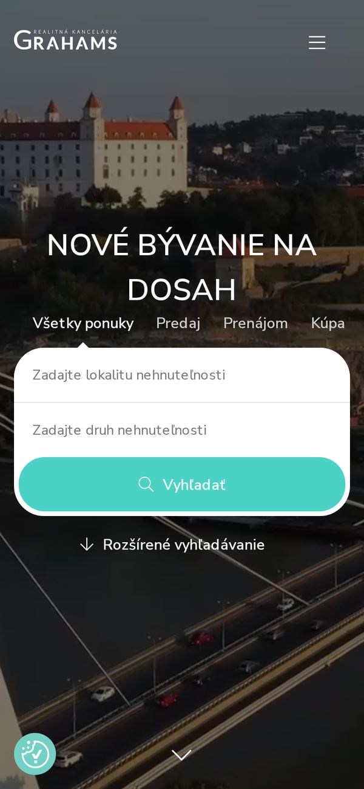

Meranie webu · 16. 9. 2026 · pripravené pre Grahams
grahams.sk očami zákazníka na telefóne
Web som dal zmerať tak, ako ho otvorí človek na mobile so slabším signálom. Nižšie sú čísla z nástroja Google Lighthouse, snímka obrazovky a to, čo by som opravil ako prvé. Nič z toho nie je odhad — všetko sa dá zopakovať.
Čo sme namerali

- Rýchlosť na mobile podľa Google Lighthouse: 55/100
- V teste Google Lighthouse (pomalší mobil a sieť) sa hlavný obsah načíta za 13,7 s, odporúčanie je do 2,5 s
- Na úvodnej stránke nie je kontaktný formulár
- Úvodná stránka sťahuje 9 MB dát
- Server odpovedal za 979 ms
Google hodnotí 0–49 ako slabé, 50–89 ako priemerné, 90–100 ako dobré. Merané na emulovanom mobile so spomaleným pripojením, tak ako to robí Google pri hodnotení stránok.
Čo to znamená pre vašich klientov
Nízke skóre rýchlosti na mobile znamená, že človek so slabším signálom čaká na prázdnu obrazovku. Google rýchlosť započítava do poradia vo výsledkoch.
Hlavný obsah sa načíta neskoro — návštevník niekoľko sekúnd nevidí nič, čo by ho presvedčilo zostať.
Bez formulára na úvodnej stránke musí záujemca hľadať kontakt inde. Časť ľudí to neurobí.
Úvodná stránka sťahuje veľa dát: na mobilných dátach sa načítava dlho a stojí návštevníka peniaze.